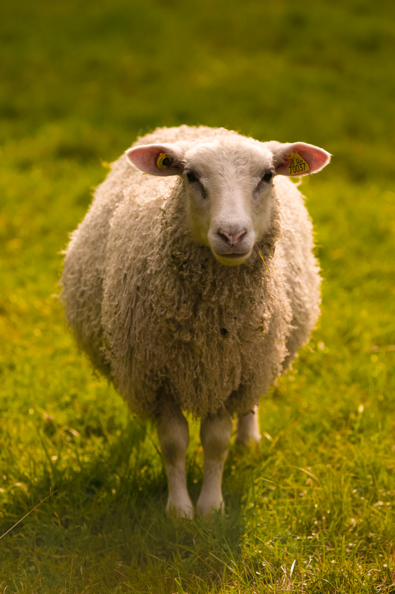

Ovelha
da família CaprinaeÉ um animal de enorme importância econômica como fonte de carne, laticínios, lã e couro. Criado em cativeiro em todos os continentes, a ovelha foi domesticada na Idade do Bronze.
As ovelhas são, quase sempre, criadas em rebanhos. O manejo requer cuidados, seja pelo fato de se tratar de um rebanho grande, ou por serem animais sensíveis.

Nas regiões mais frias, como no sul do Brasil, o cuidado com as crias recém-nascidas deve ser intenso, já que a época de partos coincide com os meses de inverno, quando se tratar de raças que possuem sazonalidade reprodutiva.
Basicamente, a ovelha (fêmea) é um animal dócil, e sem nenhum mecanismo natural de defesa; o que deve ter influenciado para, na cultura popular, estar associada à ideia de inocência. No caso dos carneiros (machos) é necessária alguma precaução com alguns animais mais agressivos.
"estes podem usar as hastes de forma perigosa,As ovelhas não tem os sentidos aguçados como outros animais. Se destacam sua Audição baixa"
- Surgiu: 8.000 anos
- Tipo: Mamífero
- Idade Média: 10 anos
- Macho adulto: 90kg
- Fêmea adulta: 80kg
- Família: Caprinae
"No Brasil, a criação de gado foi iniciada tão logo foram implantados os primeiros engenhos de açúcar em Pernambuco, na primeira metade do século XVI. Serviam para abastecer, de leite e carne, as pessoas que se estabeleciam na área de influência de cada engenho.."
As novilhas semisselvagens do gado das terras altas dão à luz aos 2 ou 3 anos de idade, e o momento do nascimento é sincronizado com o aumento da qualidade natural dos alimentos.